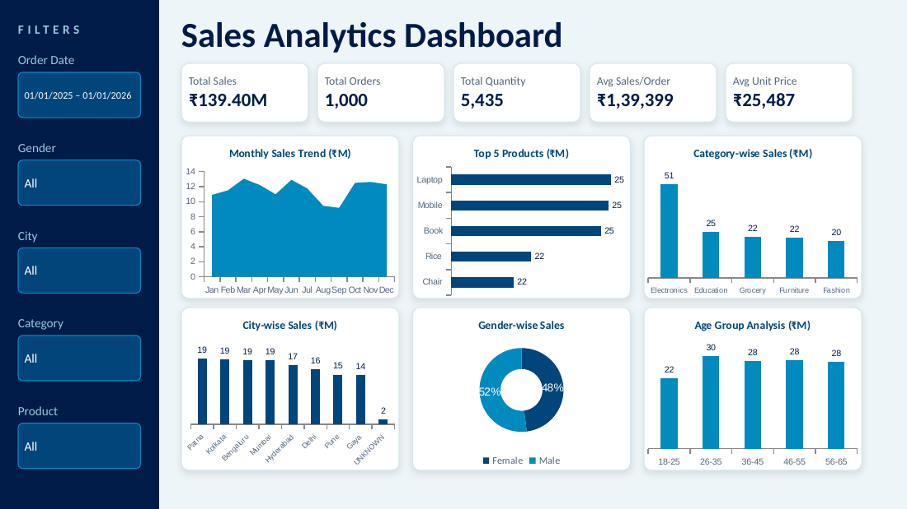
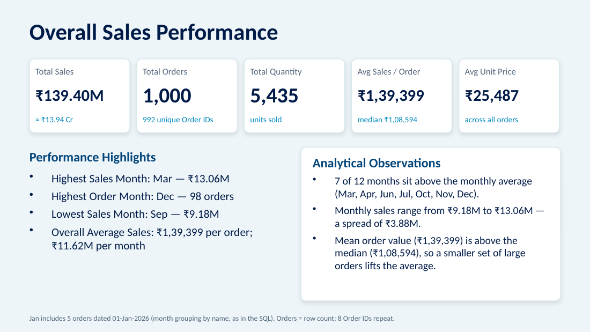
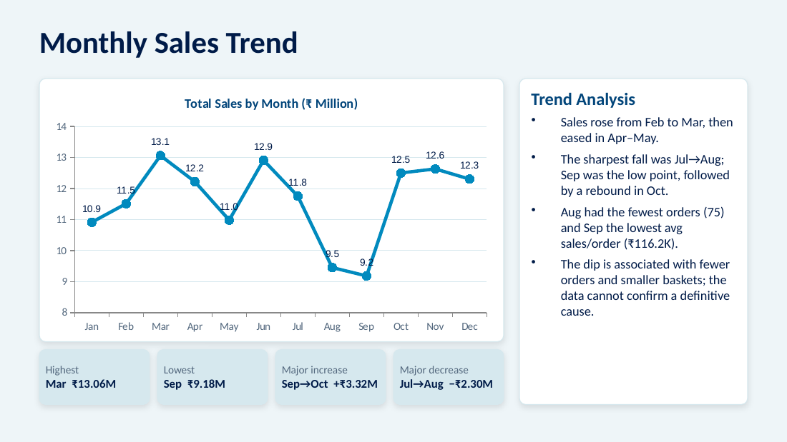
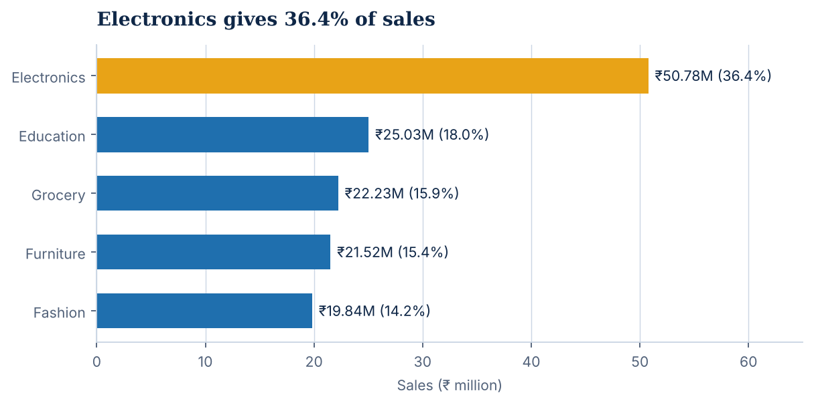

Rahul, aspiring data analyst
Four projects on one sales dataset: ₹139.40M of orders, examined end to end.
During the ApexPlanet Data Analytics Internship I prepared a 1,000-order dataset, queried it in SQL, built a Power BI dashboard and presented what the numbers say.
March is the peak month at ₹13.06M. September is the lowest at ₹9.18M.
About
I am an aspiring data analyst who likes turning plain sales records into answers a business can act on. My internship work uses SQL for questions, Power Query and DAX for preparing data in Power BI, and slides for explaining the result.
Everything on this page comes from one repository, so each claim links back to code or files you can open.
- Role
- Aspiring data analyst
- Internship
- ApexPlanet Data Analytics Internship
- Focus
- Sales analytics
- Main tools
- SQL, Power BI, DAX, Power Query
Skills
Each skill is tied to the project where it is used. Nothing is listed that the repository does not show.
Programming languages
- SQL (DDL, DML, queries)
- DAX
- Power Query M
Data analysis
- Descriptive statistics: mean, median, range
- Trend and month-over-month comparison
- Pearson correlation
- Aggregation, grouping and ranking (Top N)
- Above-average analysis with subqueries
Data visualization
- Area, bar, column, donut and scatter charts
- KPI cards and slicers
- Chart titles and layout for one-page dashboards
Database management
- CREATE TABLE with typed columns
- ALTER TABLE and UPDATE with CASE
- GROUP BY, HAVING, ORDER BY, LIMIT
Data cleaning
- Type conversion, trimming text, replacing blanks
- Placeholder handling for missing Age and City
- Duplicate Order_ID awareness
Business intelligence
- Power BI report building with slicers
- Calculated columns and a measure
- Turning results into business insights
Reporting and documentation
- Slide deck with findings and caveats
- Commented SQL scripts
Version control
- GitHub repository with the four project folders
Projects
The four projects form a pipeline: each one uses the output of the one before it. Open a row for the objective, method, findings and screenshots.
Sales Dataset PreparationThe 1,000-order retail dataset that every other project builds on. CSV
Objective
Provide one consistent, analysis-ready sales dataset that SQL (Project 2) and Power BI (Project 3) can both use.
What I did
- Order data stored as a single flat file with one row per order line.
- Derived calendar columns (Month_name, Day_name) are included so sales can be grouped by month and weekday.
- No blank cells remain: missing ages are stored as 0 and missing cities as "Unknown".
- Total_Sales equals Quantity x Unit_Price in all 1,000 rows.
What I found
- 1,000 rows and 14 columns; no empty cells.
- 992 unique Order_IDs: 8 IDs repeat (the Task 4 deck notes this and counts orders as rows).
- 20 ages are stored as 0 and 13 cities as "Unknown"; later projects handle these explicitly.
- Total sales across the file are ₹139,399,439.65.
No screenshot in the original repository. The repository holds the finished CSV only. The data source and any cleaning script or notebook for this task are not included.
SQL Sales Analysis23 business questions answered with SQL: aggregation, grouping, HAVING and subqueries. SQL
Objective
Answer core sales questions about totals, months, products, categories, cities and customers directly in SQL.
What I did
- Created the
datasettable with typed columns. - Added an
age_groupcolumn with ALTER TABLE and filled it with UPDATE ... CASE (18-25, 26-35, 36-45, 46-55, 56-65, 66+). - Wrote 23 commented business questions, each answered by one query.
- Used scalar subqueries in HAVING to compare groups with an overall average.
What I found
- Total sales ₹139.40M from 1,000 orders; 5,435 units; average ₹1,39,399 per order.
- Top 5 products by sales: Laptop, Mobile, Book, Rice, Chair. Top by quantity: Mobile (1,008 units).
- Electronics is the top category (₹50.78M); Patna is the top city (₹19.29M, 135 orders).
- Male customers average ₹1,41,807 per order against ₹1,36,883 for female customers.
- Grocery has the highest average unit price (₹26,360).
No screenshot in the original repository. The repository has the script only. Query outputs and the database engine used are not recorded, so the figures above were reproduced from the Task 1 dataset and match the Task 4 presentation.
Power BI Sales DashboardOne interactive page: 6 KPI cards, 6 charts and 4 slicers on the sales data. Power BI, Power Query (M), DAX
Objective
Turn the sales dataset into an interactive dashboard that business users can filter and explore.
What I did
- Power Query: set column types, replaced blank Age with 0, trimmed City and replaced blank City with "Unknown".
- Power Query: added an Age Group column (18-25 to 66+) with a conditional custom column.
- DAX: one measure,
Average Unit Price = AVERAGE('Dataset'[Unit_Price]). - DAX calculated columns: Month Name (SWITCH over MONTH), MonthNumber, Day Name and Day Number (FORMAT).
- Built a 2150 x 1080 report page with cards, charts, slicers and a logo.
What I found
- The report page has four slicers (Month Name, Gender, City, Category) for filtering the cards and charts.
- The cards sum the same Task 1 dataset as the SQL project, so unfiltered totals are ₹139.40M in sales and 5,435 units.
- Project 4 includes a separate dashboard slide that summarizes the same metrics.

Sales Data Analysis PresentationA 13-slide deck that explains the findings from the SQL and Power BI work. PowerPoint, SQL, Power BI
Objective
Communicate the sales analysis as a clear story: performance, trends, products, cities, customers and relationships.
What I did
- Structured the deck into nine topics: summary statistics, monthly sales, product and category, city, customer and demographic, SQL questions, multivariate analysis, insights, dashboard.
- Used native charts: line, clustered column, clustered bar, scatter, doughnut and area.
- Added caveats on slides where the data needs one (repeated Order_IDs, January grouping, missing ages).
- Closed with a conclusion slide tied to each finding.
What I found
- Sales peak in March (₹13.06M) and are lowest in September (₹9.18M); the biggest rebound is September to October (+₹3.32M).
- Electronics leads with ₹50.78M (36.4%); Laptop is the top product at ₹25.44M (18.3%). The top 5 products give 85.8% of sales.
- Patna leads in sales (₹19.29M) and orders (135).
- Average order value (₹1,39,399) is above the median (₹1,08,594), so a smaller set of large orders lifts the average.
- Unit price (r = 0.69) and quantity (r = 0.65) relate moderately to order sales; the deck notes this follows from Total Sales = Quantity x Unit Price and does not imply causation.



In the sales data, Electronics (Laptop and Mobile) leads with ₹50.78M. The top 5 products give 85.8% of all sales.
Internship experience
The ApexPlanet internship is organised as four tasks. Dates and duration are not recorded in the repository, so none are shown here.
- Prepare the dataTask 1. Dataset.csv: 1,000 orders, 14 columns
- Query it in SQLTask 2. sql_analysis.sql: 23 business questions
- Build the dashboardTask 3. Dashboard.pbix: 6 cards, 6 charts, 4 slicers
- Present the findingsTask 4. Sales Data Analysis.pptx: 13 slides
Achievements
- 23
- SQL business questions answered, from totals to HAVING with subqueries
- 6 + 4
- charts and slicers in one interactive Power BI report page
- 13
- slides explaining the findings, with caveats where the data needs them
- ₹139.40M
- of sales analysed across 1,000 orders and 947 customers
Contact
Want to see the code behind any number on this page? Everything is in the repository.